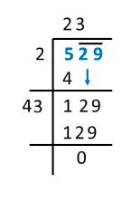

EXERCISE 5.4 — Step by Step Solutions
1. Find the square root of each of the following numbers by Division method.
(i) 2304 (ii) 4489 (iii) 3481 (iv) 529 (v) 3249
(vi) 1369 (vii) 5776 (viii) 7921 (ix) 576 (x) 1024
(xi) 3136 (xii) 900
(i) 2304 (ii) 4489 (iii) 3481 (iv) 529 (v) 3249
(vi) 1369 (vii) 5776 (viii) 7921 (ix) 576 (x) 1024
(xi) 3136 (xii) 900
(i) 2304: Group 23 and 04.
The square number less than 23 is 16 (\(4 \times 4 = 16\)).
So, \( \sqrt{2304} = 48 \)
So, the first digit is 4. Subtract 16 from 23 to get 7. Bring down 04. The new dividend is 704. Double the first digit of the quotient (4 x 2 = 8) and find a digit \(x\) such that \(8x \times x\) is less than or equal to 704. We reach \(88 \times 8 = 704\). The second digit is 8.
So, \( \sqrt{2304} = 48 \)
(ii) 4489: Group 44 and 89. \(6^2 = 36\). 44 - 36 = 8. Bring down 89. New dividend is 889. Double 6 to get 12. Find \(x\) such that \(12x \times x \leq 889\). \(127 \times 7 = 889\).
So, \( \sqrt{4489} = 67 \)
So, \( \sqrt{4489} = 67 \)
(iii) 3481: Group 34 and 81. \(5^2 = 25\). 34 - 25 = 9. Bring down 81. New dividend is 981. Double 5 to get 10. \(109 \times 9 = 981\).
So, \( \sqrt{3481} = 59 \)
So, \( \sqrt{3481} = 59 \)
(iv) 529: Group 5 and 29. \(2^2 = 4\). 5 - 4 = 1. Bring down 29. New dividend is 129. Double 2 to get 4. \(43 \times 3 = 129\).
So, \( \sqrt{529} = 23 \)
So, \( \sqrt{529} = 23 \)

(v) 3249: Group 32 and 49. \(5^2 = 25\). 32 - 25 = 7. Bring down 49. New dividend is 749. Double 5 to get 10. \(107 \times 7 = 749\).
So, \( \sqrt{3249} = 57 \)
So, \( \sqrt{3249} = 57 \)
(vi) 1369: Group 13 and 69. \(3^2 = 9\). 13 - 9 = 4. Bring down 69. New dividend is 469. Double 3 to get 6. \(67 \times 7 = 469\).
So, \( \sqrt{1369} = 37 \)
So, \( \sqrt{1369} = 37 \)
(vii) 5776: Group 57 and 76. \(7^2 = 49\). 57 - 49 = 8. Bring down 76. New dividend is 876. Double 7 to get 14. \(146 \times 6 = 876\).
So, \( \sqrt{5776} = 76 \)
So, \( \sqrt{5776} = 76 \)
(viii) 7921: Group 79 and 21. \(8^2 = 64\). 79 - 64 = 15. Bring down 21. New dividend is 1521. Double 8 to get 16. \(169 \times 9 = 1521\).
So, \( \sqrt{7921} = 89 \)
So, \( \sqrt{7921} = 89 \)
(ix) 576: Group 5 and 76. \(2^2 = 4\). 5 - 4 = 1. Bring down 76. New dividend is 176. Double 2 to get 4. \(44 \times 4 = 176\).
So, \( \sqrt{576} = 24 \)
So, \( \sqrt{576} = 24 \)
(x) 1024: Group 10 and 24. \(3^2 = 9\). 10 - 9 = 1. Bring down 24. New dividend is 124. Double 3 to get 6. \(62 \times 2 = 124\).
So, \( \sqrt{1024} = 32 \)
So, \( \sqrt{1024} = 32 \)
(xi) 3136: Group 31 and 36. \(5^2 = 25\). 31 - 25 = 6. Bring down 36. New dividend is 636. Double 5 to get 10. \(106 \times 6 = 636\).
So, \( \sqrt{3136} = 56 \)
So, \( \sqrt{3136} = 56 \)
(xii) 900: Group 9 and 00. \(3^2 = 9\). 9 - 9 = 0. Bring down 00. The second digit is 0.
So, \( \sqrt{900} = 30 \)
So, \( \sqrt{900} = 30 \)
2. Find the number of digits in the square root of each of the following numbers (without any calculation).
(i) 64 (ii) 144 (iii) 4489 (iv) 27225 (v) 390625
(i) 64 (ii) 144 (iii) 4489 (iv) 27225 (v) 390625
To find the number of digits in the square root of a perfect square without calculation, you can group the digits in pairs from the right. The number of groups is equal to the number of digits in the square root. If the number of digits \(n\) is even, the square root has \( \frac{n}{2} \) digits. If \(n\) is odd, the square root has \( \frac{n+1}{2} \) digits.
(i) 64: Number of digits \(n=2\) (even). Number of digits in square root = \( \frac{2}{2} = 1 \).
(ii) 144: Number of digits \(n=3\) (odd). Number of digits in square root = \( \frac{3+1}{2} = 2 \).
(iii) 4489: Number of digits \(n=4\) (even). Number of digits in square root = \( \frac{4}{2} = 2 \).
(iv) 27225: Number of digits \(n=5\) (odd). Number of digits in square root = \( \frac{5+1}{2} = 3 \).
(v) 390625: Number of digits \(n=6\) (even). Number of digits in square root = \( \frac{6}{2} = 3 \).
3. Find the square root of the following decimal numbers.
(i) 2.56 (ii) 7.29 (iii) 51.84 (iv) 42.25 (v) 31.36
(i) 2.56 (ii) 7.29 (iii) 51.84 (iv) 42.25 (v) 31.36
(i) 2.56: Pair the digits starting from the decimal point. We have 2 and 56. \(1^2=1\). 2-1=1. Bring down 56. Double 1 to get 2. \(26 \times 6 = 156\). Place the decimal point after the first digit in the quotient.
So, \( \sqrt{2.56} = 1.6 \)
So, \( \sqrt{2.56} = 1.6 \)
(ii) 7.29: Group 7 and 29. \(2^2=4\). 7-4=3. Bring down 29. New dividend is 329. Double 2 to get 4. \(47 \times 7 = 329\).
So, \( \sqrt{7.29} = 2.7 \)
So, \( \sqrt{7.29} = 2.7 \)
(iii) 51.84: Group 51 and 84. \(7^2=49\). 51-49=2. Bring down 84. New dividend is 284. Double 7 to get 14. \(142 \times 2 = 284\).
So, \( \sqrt{51.84} = 7.2 \)
So, \( \sqrt{51.84} = 7.2 \)
(iv) 42.25: Group 42 and 25. \(6^2=36\). 42-36=6. Bring down 25. New dividend is 625. Double 6 to get 12. \(125 \times 5 = 625\).
So, \( \sqrt{42.25} = 6.5 \)
So, \( \sqrt{42.25} = 6.5 \)
(v) 31.36: Group 31 and 36. \(5^2=25\). 31-25=6. Bring down 36. New dividend is 636. Double 5 to get 10. \(106 \times 6 = 636\).
So, \( \sqrt{31.36} = 5.6 \)
So, \( \sqrt{31.36} = 5.6 \)

4. Find the least number which must be subtracted from each of the following numbers so as to get a perfect square. Also find the square root of the perfect square so obtained.
(i) 402 (ii) 1989 (iii) 3250 (iv) 825 (v) 4000
(i) 402 (ii) 1989 (iii) 3250 (iv) 825 (v) 4000
(i) 402: \(20^2=400\). \(402-400=2\). The remainder is 2. The perfect square is 400 and its square root is 20.
So, the least number to subtract is 2. The perfect square is 400. \( \sqrt{400} = 20 \).
So, the least number to subtract is 2. The perfect square is 400. \( \sqrt{400} = 20 \).
(ii) 1989: The square root of 1989 by division method is 44 with a remainder of 53.
So, the least number to subtract is 53. The perfect square is \(1989 - 53 = 1936\). \( \sqrt{1936} = 44 \).
So, the least number to subtract is 53. The perfect square is \(1989 - 53 = 1936\). \( \sqrt{1936} = 44 \).
(iii) 3250: The square root of 3250 is 57 with a remainder of 1.
So, the least number to subtract is 1. The perfect square is \(3250 - 1 = 3249\). \( \sqrt{3249} = 57 \).
So, the least number to subtract is 1. The perfect square is \(3250 - 1 = 3249\). \( \sqrt{3249} = 57 \).
(iv) 825: The square root of 825 is 28 with a remainder of 41.
So, the least number to subtract is 41. The perfect square is \(825 - 41 = 784\). \( \sqrt{784} = 28 \).
So, the least number to subtract is 41. The perfect square is \(825 - 41 = 784\). \( \sqrt{784} = 28 \).

(v) 4000: The square root of 4000 is 63 with a remainder of 31.
So, the least number to subtract is 31. The perfect square is \(4000 - 31 = 3969\). \( \sqrt{3969} = 63 \).
So, the least number to subtract is 31. The perfect square is \(4000 - 31 = 3969\). \( \sqrt{3969} = 63 \).
5. Find the least number which must be added to each of the following numbers so as to get a perfect square. Also find the square root of the perfect square so obtained.
(i) 525 (ii) 1750 (iii) 252 (iv) 1825 (v) 6412
(i) 525 (ii) 1750 (iii) 252 (iv) 1825 (v) 6412
(i) 525: The square root of 525 is 22 with a remainder of 41. The next perfect square is \(23^2=529\).
The number to add is \(529 - 525 = 4\). The perfect square is 529. \( \sqrt{529} = 23 \).
The number to add is \(529 - 525 = 4\). The perfect square is 529. \( \sqrt{529} = 23 \).
(ii) 1750: The square root of 1750 is 41 with a remainder of 9. The next perfect square is \(42^2=1764\).
The number to add is \(1764 - 1750 = 14\). The perfect square is 1764. \( \sqrt{1764} = 42 \).
The number to add is \(1764 - 1750 = 14\). The perfect square is 1764. \( \sqrt{1764} = 42 \).
(iii) 252: The square root of 252 is 15 with a remainder of 27. The next perfect square is \(16^2=256\).
The number to add is \(256 - 252 = 4\). The perfect square is 256. \( \sqrt{256} = 16 \).
The number to add is \(256 - 252 = 4\). The perfect square is 256. \( \sqrt{256} = 16 \).
(iv) 1825: The square root of 1825 is 42 with a remainder of 1. The next perfect square is \(43^2=1849\).
The number to add is \(1849 - 1825 = 24\). The perfect square is 1849. \( \sqrt{1849} = 43 \).
The number to add is \(1849 - 1825 = 24\). The perfect square is 1849. \( \sqrt{1849} = 43 \).
(v) 6412: The square root of 6412 is 80 with a remainder of 12. The next perfect square is \(81^2=6561\).
The number to add is \(6561 - 6412 = 149\). The perfect square is 6561. \( \sqrt{6561} = 81 \).
The number to add is \(6561 - 6412 = 149\). The perfect square is 6561. \( \sqrt{6561} = 81 \).
6. Find the length of the side of a square whose area is 441 m\(^2\).
Area of a square = side \(\times\) side = \( (side)^2 \).
To find the side, we need to find the square root of the area.
\( side = \sqrt{441} \)
Using the division method, \( \sqrt{441} = 21 \).
So, the length of the side of the square is 21 m.
So, the length of the side of the square is 21 m.
7. In a right triangle ABC, \( \angle B = 90^\circ \).
(a) If AB = 6 cm, BC = 8 cm, find AC
(b) If AC = 13 cm, BC = 5 cm, find AB
(a) If AB = 6 cm, BC = 8 cm, find AC
(b) If AC = 13 cm, BC = 5 cm, find AB
We use the Pythagorean theorem: \( (AB)^2 + (BC)^2 = (AC)^2 \).
(a) Find AC:
\( (AC)^2 = (6)^2 + (8)^2 \)
\( (AC)^2 = 36 + 64 \)
\( (AC)^2 = 100 \)
\( AC = \sqrt{100} = 10 \) cm.
(b) Find AB:
\( (13)^2 = (AB)^2 + (5)^2 \)
\( 169 = (AB)^2 + 25 \)
\( (AB)^2 = 169 - 25 = 144 \)
\( AB = \sqrt{144} = 12 \) cm.
8. A gardener has 1000 plants. He wants to plant these in such a way that the number of rows and the number of columns remain same. Find the minimum number of plants he needs more for this.
The number of plants must form a perfect square. We need to find the least number to add to 1000 to make it a perfect square.
Using the division method, \( \sqrt{1000} \) is 31 with a remainder of 39.
This means \(31^2 < 1000 < 32^2\).
\(31^2 = 961\) and \(32^2 = 1024\).
The next perfect square is 1024.
The minimum number of plants needed is \(1024 - 1000 = 24\).
The minimum number of plants needed is \(1024 - 1000 = 24\).
9. There are 500 children in a school. For a P.T. drill they have to stand in such a manner that the number of rows is equal to number of columns. How many children would be left out in this arrangement.
The number of children remaining is the difference between 500 and the nearest perfect square less than 500.
Using the division method, \( \sqrt{500} = 22 \) with a remainder of 16.
This means \(22^2 = 484\).
The number of children left out is the remainder, which is 16.
The number of children that would be left out is \(500 - 484 = 16\).
The number of children that would be left out is \(500 - 484 = 16\).